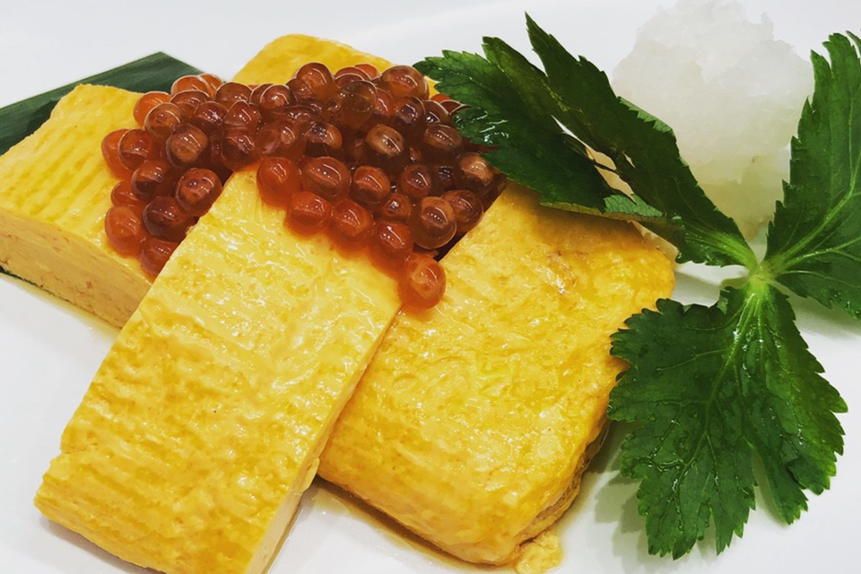
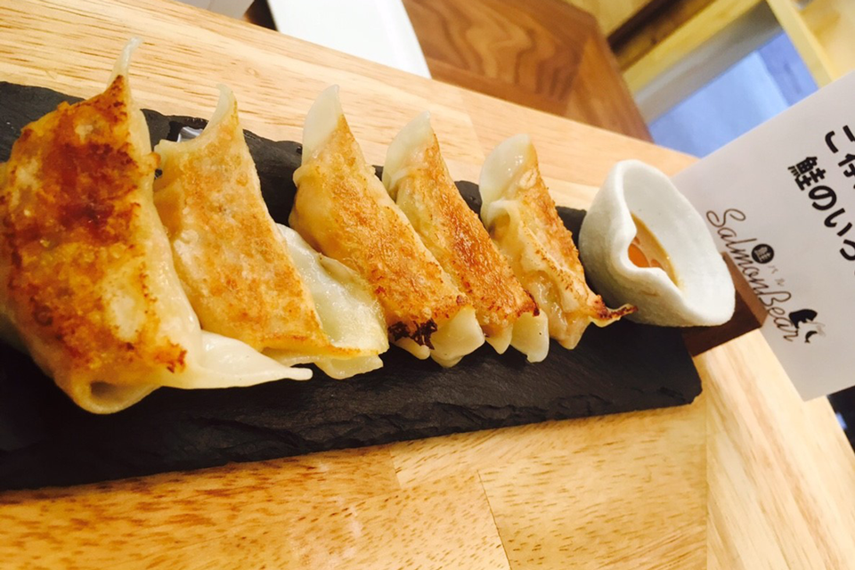

 がおすすめするおいしい鮭料理 サーモンを使った料理はたくさんあります。
がおすすめするおいしい鮭料理 サーモンを使った料理はたくさんあります。
SalmonBearでは、いろんな調理法で鮭を楽しめます。
同じ調理法でも鮭を変えるだけで、新しいサーモン料理に出会えます。
鮭料理を見る

 がおすすめするおいしいサーモン 鮭ってこんなにも種類があるんです。
がおすすめするおいしいサーモン 鮭ってこんなにも種類があるんです。
すべての鮭をSalmonbearの料理人たちがおいしく料理します。
同じ料理で鮭を変えてみるなど、食べ比べしても面白いかも!?
おすすめ鮭を見る

 アクセス ご予約等、お気軽にお問い合わせ下さい
アクセス ご予約等、お気軽にお問い合わせ下さい
18:00～20:00はお電話が繋がりにくくなっておりますので、ご了承くださいませ。
- TEL
- 06-6485-8828
- 住所
- 大阪市福島区福島1-2-17 meet Me 梅田西1階
- 営業時間
- 【ランチ】平日のみ。水曜、土日祝日はお休み。
- 11:30～14:00(L.O 13:30)
- 【ディナー】
- 17:00～23:30(L.O 23:00)
- 定休日
- 水曜日
- アクセス
- 環状線福島駅7分、東西線新福島3分、阪神本線福島駅4分、京阪中之島5分